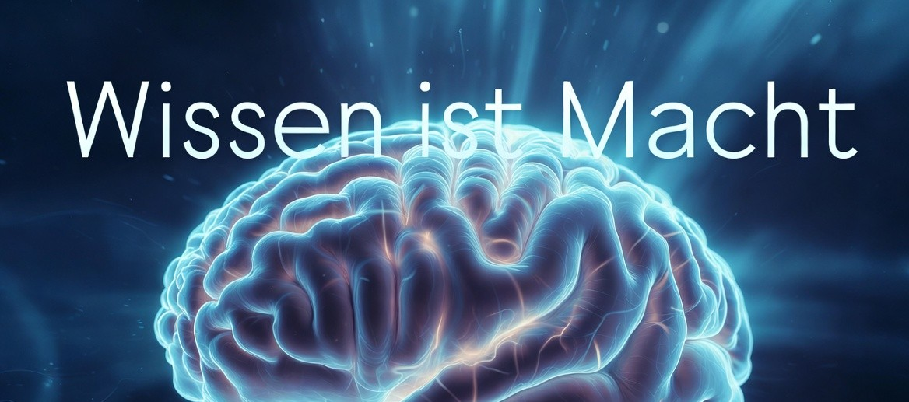

Echten Wissen - Ein Schlüssel zur unbegrenzten Macht?

Wissen - erlernbares Potential und schöpferische Kraft für mehr Lebensqualität
Hinweis: Dieser Blogeintrag ist bald auf Youtube verfügbar:
YouTube GedankenwerkTV
27.03.2026
Wissen ist Macht
In diesem Blog möchte mal ein wenig über echtes Wissen sprechen und was es mit uns machen kann.Wissen gilt seit jeher als eine der mächtigsten Kräfte, die dem Menschen überhaupt zur Verfügung stehen können. Dabei geht es aber weit über die bloße Anhäufung von Fakten und echten Informationen hinaus. Wissen ist Macht, weil es die entscheidende Grundlage für ein selbstbestimmtes, erfülltes und unabhängiges Leben bildet. Die kontinuierliche Bildung und die gezielte Beschaffung echter, zuverlässiger Informationen bestimmen am Ende maßgeblich darüber, welche Wege im Leben offenstehen und welche uns als Sackgassen erscheinen. Während viele Menschen vor scheinbar unüberwindbaren Hindernissen stehen bleiben, erkennt der Wissende genau an solchen Hindernissen neue Möglichkeiten, alternative Lösungswege und Chancen, die ihm zuvor verborgen waren.
Mehr Wissen führt also somit ganz direkt zu mehr Freiheit. Der eigene Handlungsspielraum erweitert sich spürbar in nahezu allen Bereichen des Lebens. Besonders deutlich wird dieser Effekt sogar im wirtschaftlichen Bereich. Wer über umfassendes Wissen verfügt, kann deshalb Chancen früher erkennen, eigene Ideen gezielter entwickeln und fundiertere Entscheidungen treffen, wenn es um das Verdienen von Geld geht. Wissen wird dadurch also auch zum tragenden Fundament einer soliden Lebensgrundlage.
Es schafft daher ein hohes Maß an Unabhängigkeit und bietet gleichzeitig auch einen wirksamen Schutz vor Täuschung und Betrug. Wer die Hintergründe von Angeboten, Verträgen, wirtschaftlichen Mechanismen oder gesellschaftlichen Entwicklungen erst einmal versteht, lässt sich deutlich seltener täuschen. Risiken können besser eingeschätzt werden, und man bewegt sich sehr viel sicherer durch eine komplexe Welt.
Darüber hinaus eröffnet Wissen auch völlig neue Perspektiven auf die eigene Situation und auf die Umwelt. Verschiedene Sichtweisen auf dasselbe Ereignis oder Problem ermöglichen eine ausgewogenere und nuanciertere Betrachtung der Wirklichkeit. Diese erweiterte Sichtweise stärkt das Selbstbewusstsein nachhaltig. Ehemals große Hürden, die als unüberwindbar galten und bedrohlich wirkten, verwandeln sich oft mit zunehmendem Verständnis in kleine Hindernisse, die sich leicht bewältigen lassen. Das gesamte Leben erscheint dadurch überschaubarer, gestaltbarer und weniger bedrohlich. Die innere Sicherheit wächst, weil die Welt nicht länger als undurchschaubares Chaos wahrgenommen wird, sondern als ein System von Zusammenhängen, in dem man sich gezielt und bewusst bewegen kann.
Die positiven Auswirkungen des Wissens beschränken sich jedoch nicht nur auf äußere Vorteile. Das menschliche Gehirn verändert sich tatsächlich stark durch das stetige Aufnehmen und aktive Verarbeiten neuer Informationen. Das Gute ist, das es ein ganzes Leben lang anpassungsfähig bleibt. Bei jeder neuen echten Erkenntnis und jedem bewussten Nachdenken darüber entstehen neue Verbindungen zwischen den Nervenzellen im Gehirn.
Diese Verbindungen festigen sich, wenn die gleichen Gedanken wiederholt werden. Das grundlegende Prinzip lautet, dass Nervenzellen, die gemeinsam aktiv sind, sich miteinander verbinden. In bestimmten Regionen des Gehirns, besonders in dem Bereich, der für Lernen und Gedächtnis eine zentrale Rolle spielt, können sogar völlig neue Nervenzellen entstehen. Moderne wissenschaftliche Untersuchungen mit bildgebenden Verfahren zeigen klar, dass intensives Lernen zu messbaren strukturellen Veränderungen im Gehirn führt. Bereits relativ kurze, konzentrierte Lernphasen von etwa zwei Stunden können mikrostrukturelle Anpassungen auslösen. Das Gehirn wird auf diese Weise immer dichter vernetzt und immer leistungsfähiger. Das persönliche Potenzial wächst also buchstäblich mit jedem neuen Verständnis und jeder vertieften Einsicht. Es entfaltet sich immer mehr und sorgt somit letzten Endes auch für immer bessere Lebensumstände.
Je mehr echtes und gut verknüpftes Wissen also vorhanden ist, desto leichter fällt es unserem Gehirn, neue und unerwartete Verbindungen herzustellen. Das Gehirn kombiniert hierbei vorhandene Informationen auf eine kreative Art und Weise miteinander. Dadurch entstehen völlig neue Ideen und Lösungen, die für uns zuvor unsichtbar waren oder undenkbar erschienen. Kreativität entsteht genau aus dieser Fähigkeit, scheinbar unzusammenhängende Inhalte sinnvoll zu verknüpfen.
Je breiter und tiefer das vorhandene Wissen also aufgebaut ist, desto müheloser gelingen uns solche kreativen Sprünge. Bestehendes Wissen dient dabei stets als stabile und tragfähige Grundlage. Neues Wissen lässt sich darauf auch schneller und dauerhafter verankern. Vorwissen erleichtert das deshalb Lernen erheblich und sorgt dabei für tiefere und schnellere Assoziationen. Der Teil des Gehirns, der für das Gedächtnis zuständig ist, arbeitet dann deutlich effizienter.
Kreative Menschen zeichnen sich häufig dadurch aus, dass sie Verbindungen erkennen, die anderen verborgen bleiben. Dies hängt eng mit der inneren Organisation ihres Wissens zusammen. Je breiter und besser vernetzt das Wissen ist, desto mehr entfernte Assoziationen können hergestellt werden. Genau diese Fähigkeit führt zu Schlussfolgerungen und Ideen, die noch niemand zuvor in dieser Form gesehen hat. Besonders Menschen mit breitem Wissen aus ganz unterschiedlichen Gebieten erweisen sich in komplexen und unübersichtlichen Situationen oft als besonders innovativ. Sie können quer denken und an den Schnittstellen verschiedener Bereiche völlig neue Ansätze entwickeln. Solche Querdenker entdecken Muster und Chancen, die Menschen mit einem sehr engen fachlichen Fokus oft nicht wahrnehmen.
Das angesammelte Wissen, das ein Mensch im Verlauf seines Lebens erwirbt, spielt dabei eine besonders wichtige Rolle. Es handelt sich um die Summe aus persönlichen Erfahrungen, erlernten Fakten und verstandenen Zusammenhängen. Dieses Wissen unterstützt nicht nur das weitere Lernen, sondern fördert auch die kreative Denkweise in einem sehr hohem Maße.
Eine solide Wissensbasis erleichtert also die Entwicklung und die sorgfältige Ausarbeitung neuer Ideen und Lösungswege. Während die angeborene Fähigkeit zum reinen Problemlösen ohne jegliches Vorwissen gewisse natürliche Grenzen aufweist, lässt sich das angesammelte Wissen durch kontinuierliches Lernen und weiter bilden stark ausbauen. Zwischen diesem Wissensschatz und der Fähigkeit zu kreativem Denken besteht ein klar positiver Zusammenhang. Jeder Mensch kann auf diese Weise sein eigenes Potenzial stark erweitern und genau darum geht es, denn die meisten Menschen wissen nicht, wie groß ihr tatsächliches Potential überhaupt ist, beziehungsweise, wie groß es wirklich werden kann.
Entscheidend für den langfristigen Nutzen ist jedoch die Qualität des aufgebauten Wissens. Oberflächliche oder nur flüchtig aufgenommene Informationen. zum Beispiel ein banales auswendig lernen ohne etwas zu hinterfragen, bringen nur geringen dauerhaften Gewinn. Tiefes Verständnis, aktives Nachdenken über die Zusammenhänge und die bewusste Reflexion führen letztlich zu den wirklichen Fortschritten. Wiederholung und ausreichende Erholungsphasen unterstützen den Prozess der dauerhaften Verankerung im Gedächtnis enorm. Faktoren wie anhaltender Stress oder Schlafmangel können diesen wichtigen Prozess hingegen deutlich verlangsamen oder behindern.
Zusammenfassend lässt sich festhalten: Wissen ist weit mehr als eine bloße Ansammlung von Einzelheiten. Es bildet die zentrale Grundlage für Freiheit, Unabhängigkeit und persönliche Entfaltung. Wer echtes Wissen systematisch aufbaut, erweitert nicht nur den eigenen Horizont, sondern verändert auch die Funktionsweise des eigenen Denkens nachhaltig zum Positiven. In einer Welt, die von Unsicherheiten, raschen Veränderungen und komplexen Herausforderungen geprägt ist, bleibt Wissen eine der zuverlässigsten und mächtigsten Ressourcen. Es verleiht die Kraft, das eigene Leben aktiv, selbstbestimmt und mit größerer Sicherheit zu gestalten.
Wissen ist also tatsächlich Macht.
Vielen Dank fürs lesen.
Weitere Informationen zu diesen und ähnlichen Themen finden Sie auch in der weiterführenden Rubrik "Geist und Gestaltung", im weitesten Sinne.
Weiterführende Links:
- https://www.edutopia.org/neuroscience-brain-based-learning-neuroplasticity (Englisch) Guter, zugänglicher Artikel, der erklärt, wie Lernen und Erfahrungen das Gehirn physisch verändern (Neuroplastizität). Er zeigt, dass Intelligenz nicht festgelegt ist, sondern sich durch aktives Lernen und Nachdenken weiterentwickelt
- https://pmc.ncbi.nlm.nih.gov/articles/PMC6632359/ – (Englisch) Wissenschaftliche Studie (longitudinale Zwillingsstudie mit MRT), die zeigt, dass das Gehirn sich im Erwachsenenalter weiter verändert und dass höhere Intelligenz mit stärkerer kortikaler Anpassung (weniger Abbau, mehr Verdickung) zusammenhängt. Sie unterstreicht den Zusammenhang zwischen Plastizität und kognitiven Fähigkeiten.
- https://commoncog.com/range-book-summary/ – (Englisch) Zusammenfassung des Buches „Range“ von David Epstein. Es argumentiert stark für breites Wissen (Generalisten) statt enger Spezialisierung, weil genau dadurch neue, kreative Verknüpfungen entstehen.
- https://www.oth-aw.de/files/oth-aw/Aktuelles/Veroeffentlichungen/WEN-Diskussionspapier/WEN-DPs-PDF/DP29.pdf – (Deutsch) Deutsches Diskussionspapier zum lebenslangen Lernen im Alter. Es erklärt sehr klar den Unterschied zwischen fluider und kristalliner Intelligenz und wie Neuroplastizität auch im höheren Alter erhalten bleibt. Besonders relevant, weil es zeigt, dass kristalline Intelligenz (angesammeltes Wissen) stabil oder sogar steigerbar ist.
Damit Gedankenwerktv weiterhin bestehen und sich weiter entwickeln kann, ist dieses Projekt auf Unterstützung angewiesen. Welche verschiedenen Möglichkeiten es dazu gibt und was Sie dafür tun können, erfahren sie hier: